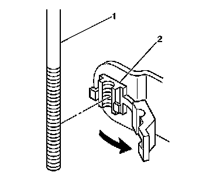
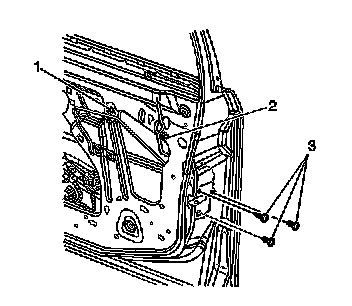
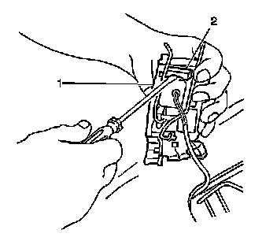
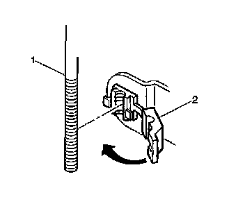

Front Door Latch: Service and Repair
Front Side Door Latch Replacement
Removal Procedure
1. Raise the window to the full up position.
2. Remove the door trim panel. Refer to Front Side Door Trim Panel Replacement (Service and Repair) .
3. Remove the water deflector. Refer to Front Side Door Water Deflector Replacement (Service and Repair) .
4. Disconnect the lock cylinder rod from the door latch, if equipped.

5. Disconnect the outside door handle rod (1) from the door latch by opening the clip (2).

6. Remove the lock knob rod from the rod guide (2).
7. Remove the inside handle rod from the rod guide (1).
8. Remove the door latch screws (3).
9. Remove the door latch from the door with the inside door handle rod and lock rod attached.

10. Use a small flat-bladed tool to lift the electrical connector lock (2) and disconnect the electrical connector .
11. Remove the handle rod and lock rod from the door latch.
Installation Procedure
1. Install the inside door handle rod and lock rod to the door latch.
2. Install the electrical connector.
3. Install the door latch into the door.
4. Install the lock cylinder rod to the door latch.
Notice: Refer to Fastener Notice (Fastener Notice) .
5. Install the door latch screws (3).
Tighten the screws to 10 N.m (89 lb in).

6. Install the outside door handle rod (1) into the latch clip (2).
7. Close the clip.
8. Install the lock knob rod into the rod guide (2).
9. Install the inside handle rod into the rod guide (1).
10. Inspect for the proper operation of the door handles, lock cylinder, and door latch.
11. Install the water deflector. Refer to Front Side Door Water Deflector Replacement (Service and Repair) .
12. Install the door trim panel. Refer to Front Side Door Trim Panel Replacement (Service and Repair) .